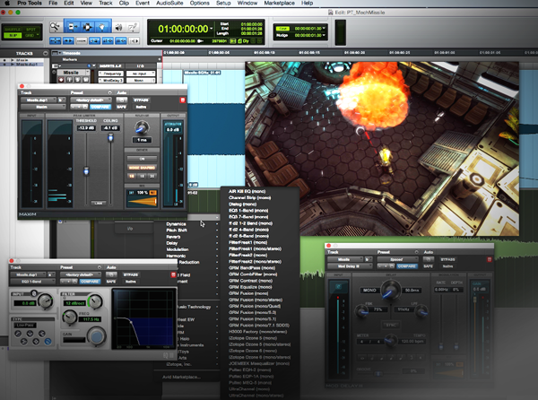

Music and Sound Design
Music and sound design influence how a game feels. Background music can create tension, excitement, or calmness. Sound effects give actions more impact and help players understand what is happening.
Even small sounds, such as footsteps or menu clicks, can make a game feel more polished. Audio also provides useful feedback, especially during combat or exploration.

Why Audio Matters
- Builds atmosphere
- Supports storytelling
- Improves player feedback
- Makes actions feel more satisfying
Strong audio design can make a simple action feel exciting and memorable.